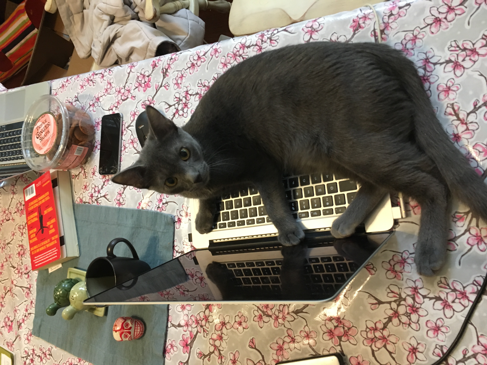

Up to date publication list - Google Scholar
Cool creatures I’ve seen recently - iNaturalist
Coding projects including this website GitHub
My full CV is available here.
Selected talks and posters are here
Twitter - with a preview below!

I am a self-taught with everything coding and computer related. I started teaching myself bash and python the year before I started my PhD and found that I really enjoyed it.
I worked with the Shirley C. Tucker Herbarium and Center for Computing and Technology to reconfigure their digitization imaging workflow, incorperating scripts from the Consortium of Pacific Northwest Herbaria.
Our goal is to provide a flexible framework of scripts that are open source and accessible to non-professional coders(i.e. biologists who have taught themselves).
Check out my GitHub page for my coding projects. I am always happy to answer questions and share tips or tricks.
I am not the best as shell scripting, I wish I had found this site years ago - https://explainshell.com/
https://www.emilyzabor.com/tutorials/rmarkdown_websites_tutorial.html#demo https://holtzy.github.io/Pimp-my-rmd/